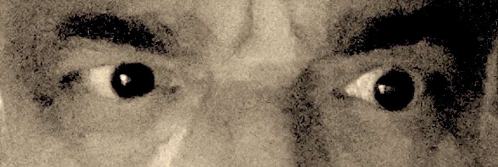

DES EDITIONS DU LUBERON
AUX EDITIONS DU LUB - EDILUB

Initialement, Ivan Sarokan est publié par les éditions du Luberon. Cette vieille maison, créée par Monique Roustan - une amie, anciennement maire de Lauris - ne peut demeurer pour la suite le port d'ancrage d'une œuvre aussi volumineuse que diverse. Les éditions du Lub (EDILUB) prennent donc le relais, l'auteur ne voulant pas dépendre de grandes structures anonyme[...] D'autres auteurs viendront par la suite compléter l'aventure et lui donner une réelle dimension éditoriale.
Sarokan - Les deux figuiers
Pour cobtenir plus de renseignements sur le premier opus des œuvres d'Ivan Sarokan, vous pouvez consulter la page qui lui est consacrée sur le site de l'auteur.
Un refuge pour demain
Les éditions du Lub. Situé au cœur du Luberon Sud, à 70 kilomètres de Marseille, à égale distance d'APT de CAVAILLON et de PERTUIS, le village de Lauris est le lieu idéal pour commencer ce cheminement Une terre en partie préservée des migrations saisonnières et touristiques, une terre qui a su conserver son cachet par l'apport de nouveaux paysans. Une terre qui n'a pas trop été défigurée par la spéculation immobilière ; pas tout à fait un hâvre pour retraités oisifs, pas tout à fait un dortoir pour travailleurs marginalisés, loin des clichés et à l'écart des modes, Lauris a réussi à préserver un peu de son âme. Village exemplaire, dirigée aujourd'hui par un ami écrivain, Eric Fontanrava, Lauris hébergera donc - quel luxe - deux maisons d'édition complémentaires.

Davantage d'information
Pour joindre les éditions du Lub - EDILUB - et en savoir plus sur les différentes manifestations qu'elles organisnt, vous pouvez nous ccontacter ici.
Pour demeurer sur notre site et poursuivre sa visite :